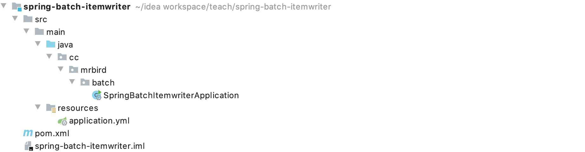
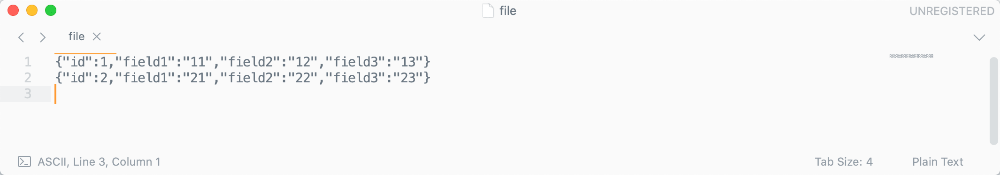
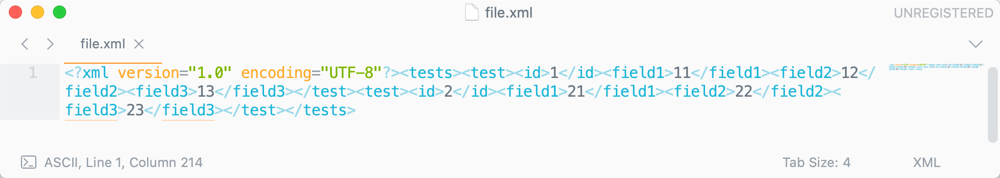
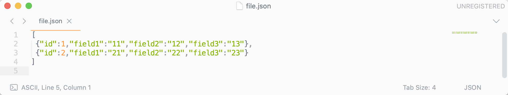
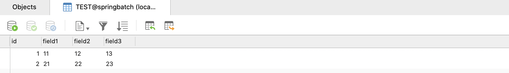
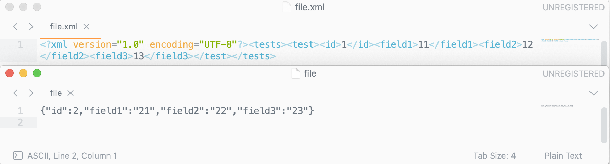
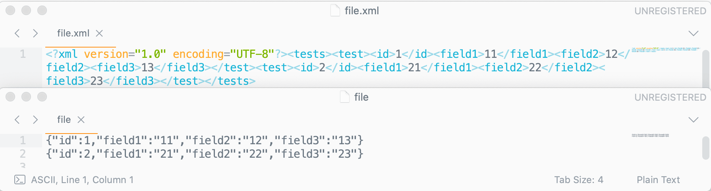

Spring Batch输出数据通过ItemWriter接口的实现类来完成，包括FlatFileItemWriter文本数据输出、StaxEventItemWriter XML文件数据输出、JsonItemWriter JSON文件数据输出、JdbcBatchItemWriter数据库数据插入等实现，更多可用的实现可以参考：https://docs.spring.io/spring-batch/docs/4.2.x/reference/html/appendix.html#itemWritersAppendix，本文只介绍这四种比较常用的输出数据方式。
框架搭建
新建一个Spring Boot项目，版本为2.2.4.RELEASE，artifactId为spring-batch-itemwriter，项目结构如下图所示：

剩下的数据库层的准备，项目配置，依赖引入和Spring Batch入门文章中的框架搭建步骤一致，这里就不再赘述。
在介绍Spring Batch数据输出之前，我们先准备个简单的数据读取源。在cc.mrbird.batch包下新建entity包，然后在该包下新建TestData实体类：
1 | public class TestData { |
接着在cc.mrbird.batch包下新建reader包，然后在该包下创建ItemReaderConfigure：
1 |
|
上面注册了一个ItemReader类型的Bean，后续都用它作为读取数据的来源。
输出文本数据
在cc.mrbird.batch包下新建job包，然后在该包下新建FileItemWriterDemo，用于测试Spring Batch输出数据到文本文件：
1 |
|
上面代码中，Step中的Reader使用的是我们上面创建的simpleReader，文本数据输出使用的是FlatFileItemWriter。fileItemWriter()方法的代码较为简单，这里就不赘述了。
启动项目后，在/Users/mrbird/Desktop目录下（也就是我的电脑桌面上）会多出个file文件：

输出xml数据
同样的，xml格式数据输出需要借助spring-oxm框架，在pom中引入相关依赖：
1 | <dependency> |
然后在job包下新建XmlFileItemWriterDemo，用于测试Spring Batch输出数据到xml文件：
1 |
|
xml类型文件输出使用的是StaxEventItemWriter。
启动项目后，在/Users/mrbird/Desktop目录下会多出个file.xml文件：

输出JSON数据
在job包下新建JsonFileItemWriterDemo，用于测试Spring Batch输出数据到json文件：
1 |
|
json类型文件输出使用的是JsonFileItemWriter。
启动项目后，在/Users/mrbird/Desktop目录下会多出个file.json文件：

输出数据到数据库
在job包下新建DatabaseItemWriterDemo，用于测试Spring Batch输出数据到数据库：
1 |
|
MySQL关系型数据数据写入使用的是JdbcBatchItemWriter。在测试之前，先清空springbatch数据库TEST表数据，然后启动项目，启动后，TEST表记录如下所示：

多文本输出
多文本输出和上一节介绍的多文本数据读取类似，都是需要通过代理来完成。我们模拟个同时输出xml格式和普通文本格式的例子。
在cc.mrbird.batch包下新建writer包，然后在该包下新建ItemWriterConfigure配置类：
1 |
|
上面的配置类中，配置了FlatFileItemWriter和StaxEventItemWriter类型的ItemWriter Bean，代码步骤和前面介绍的一致。
然后在job包下新建MultiFileItemWriteDemo，用于测试多文本输出：
1 |
|
ClassifierCompositeItemWriter可以设置不同条件下使用不同的ItemWriter输出数据，此外在Step中，还需通过StepBuilderFactory的stream()方法传入使用到的ItemWriter（这里需要注意的是，注入的时候，类型应选择ItemStreamWriter）。
在启动项目前，先删掉/Users/mrbird/Desktop目录下的文件。删掉后，启动项目，结果如下：


如果不想用分类，希望所有数据都输出到对应格式的文本中，则可以使用CompositeItemWriter作为代理输出，修改MultiFileItemWriteDemo：
1 |
|
在启动项目前，先删掉/Users/mrbird/Desktop目录下的文件。删掉后，启动项目，结果如下：

本节源码链接：https://github.com/wuyouzhuguli/SpringAll/tree/master/69.spring-batch-itemwriter。